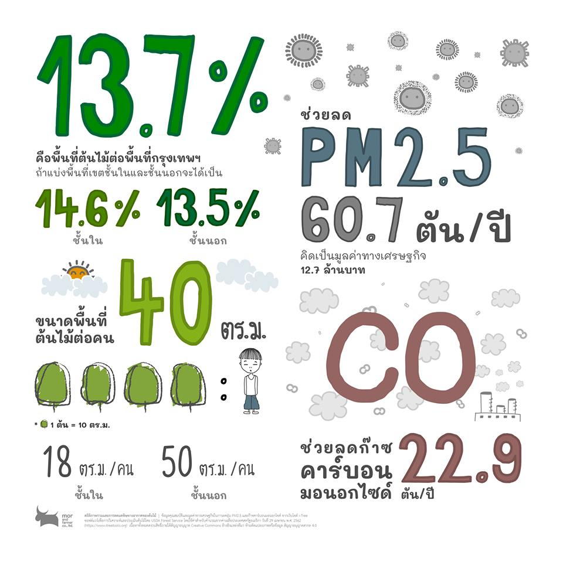
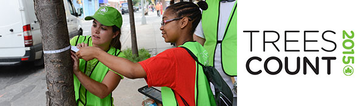
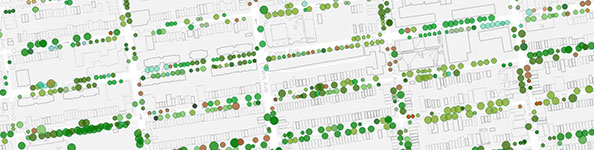

ที่ผ่านมา ประเทศไทยมี พ.ร.บ.ป่าไม้ ฉบับเดิมปี พ.ศ. 2548 ซึ่งระบุว่า “ไม้มีมูลค่าทางเศรษฐกิจบางชนิด ได้แก่ ไม้สัก ไม้ยาง ไม้ชิงชัน ไม้เก็ดแดง ไม้อีเม่ง ไม้พยุงแกลบ ไม้กระพี้ ไม้แดงจีน ไม้ขะยุง ไม้ซิก ไม้กระซิก ไม้กระซิบ ไม้พะยูง ไม้หมากพลูตั๊กแตน ไม้กระพี้เขาควาย ไม้เก็ดดำ ไม้อีเฒ่า ไม้เก็ดเขาควาย ไม่ว่าจะขึ้นอยู่ในที่ใดๆ ก็ตามในราชอาณาจักร ถือเป็นไม้หวงห้ามทั้งสิ้น”
แต่ล่าสุด เมื่อเดือนเมษายน ปี พ.ศ. 2562 รัฐบาลได้ประกาศใช้ พ.ร.บ.ป่าไม้ฉบับใหม่ที่ปลดล็อกการตัดไม้หวงห้าม ซึ่งใช้มาอย่างยาวนานกว่า 78 ปี โดย พ.ร.บ.ฉบับใหม่นี้ระบุว่า “ไม้ทุกชนิดที่ขึ้นในที่ดินมีกรรมสิทธิ์ หรือสิทธิครอบครองตามประมวลกฎหมายที่ดิน ไม่เป็นไม้หวงห้าม” นั้นหมายความว่า การทำไม้โดยเฉพาะไม้มีค่า จึงไม่จำเป็นต้องทำเรื่องขออนุญาตอีกต่อไป
แม้กฏหมายดังกล่าว จะเป็นการปลดล็อกเพื่อส่งเสริมให้ประชาชนมีรายได้มั่นคงจากการประกอบอาชีพทำไม้ ปลูกป่าเศรษฐกิจ และนำไปเป็นหลักทรัพย์ค้ำประกันได้ แต่ในทางกลับกัน ยังคงเกิดคำถามถึงไม้ที่มีมูลค่า ซึ่งเติบโตอยู่นอกป่าไร้การคุ้มครอง รวมไปถึงต้นไม้ขนาดใหญ่ชนิดอื่นๆ ที่อยู่ในพื้นที่สาธารณะหรือในชุมชนที่โดนบางหน่วยงานตัดโค่น โดยที่ชาวบ้านไม่มีสิทธิ์แม้แต่จะทำการปกป้องพื้นที่สีเขียวของตนเอง
การอนุรักษ์พรรณพืชในประเทศไทยนั้นแตกต่างจากการอนุรักษ์สัตว์เป็นอย่างมาก กฎหมายที่เกี่ยวข้องกับการอนุรักษ์สัตว์นั้นครอบคลุมสัตว์เลี้ยงและสัตว์ป่า โดยมีพ.ร.บ. สงวนและคุ้มครองสัตว์ป่า พ.ศ. 2562 เป็นหลัก หรือแม้แต่สัตว์ที่อาศัยอยู่ในเขตอุทยานแห่งชาติและเขตรักษาพันธุ์สัตว์ป่าก็อาจถูกคุ้มครองได้ด้วยกฎหมายว่าด้วยการอนุรักษ์ในเขตพิเศษดังกล่าว จึงอาจสรุปได้ว่ากฎหมายว่าด้วยอนุรักษ์สัตว์นั้น ครอบคลุมทั้งการอนุรักษ์ในถิ่นอาศัย (in situ conservation) การอนุรักษ์นอกถิ่นอาศัย (ex situa conservation) และการใช้ประโยชน์จากสัตว์ป่า
ในขณะเดียวกัน กฎหมายว่าด้วยการอนุรักษ์พรรณพืช เช่น พ.ร.บ.พันธุ์พืช พ.ศ. 2518 และ พ.ร.บ. คุ้มครองพันธุ์พืช พ.ศ. 2542 นั้นเน้นการใช้ประโยชน์ทางเศรษฐกิจเป็นหลัก และเน้นการนำเข้า-ส่งออกของพืชอนุรักษ์และพืชสงวนมากกว่าการอนุรักษ์ภายในประเทศ และยังเน้นการปรับปรุงพันธุ์เพื่อประโยชน์เชิงพาณิชย์มากกว่าจะคำนึงถึงการรักษาความหลากหลายทางชีวภาพ
อย่างไรก็ดี กลุ่ม mor and farmer ได้ทำการใช้ machine learning แยกพื้นที่สีเขียวออกจากภาพถ่ายดาวเทียมของกรุงเทพฯ เมื่อปลายปี พ.ศ. 2560 ถึง ต้นปี พ.ศ. 2561 พบว่า กรุงเทพฯ มีพื้นที่สีเขียวทั้งสาธารณะและส่วนบุคคลคิดเป็นเพียง 13.7% ของพื้นที่ทั้งหมด ซึ่งเป็นตัวเลขที่ต่ำมากเมื่อเทียบกับแนวคิดเมืองสีเขียวของสำนักงานนโยบายและแผนทรัพยากรธรรมชาติและสิ่งแวดล้อม ที่เสนอให้เมืองควรมีพื้นที่สีเขียว 30-50% ต่อพื้นที่ทั้งหมด ซึ่งเป็นตัวเลขที่ใกล้เคียงกับเป้าหมาย 40% ภายในปี พ.ศ. 2583 ของเมืองเมลเบิร์นในประเทศออสเตรเลีย (เริ่มต้นโครงการในปี พ.ศ. 2555 ด้วยพื้นที่สีเขียว 23%) ที่ปัจจุบันดูแลต้นไม้ใหญ่ในเมืองกว่า 70,000 ต้น และให้ความสำคัญต่อการรักษาความหลากหลายทางชีวภาพของพืชท้องถิ่น

สิงคโปร์เป็นอีกหนึ่งประเทศที่ให้ความสำคัญต่อปริมาณพื้นที่สีเขียวในเมือง โดยมี Singapore Botanic Gardens หรือสวนพฤกษศาสตร์สิงคโปร์ ที่ได้รับการขึ้นทะเบียนเป็นมรดกโลก มีประวัติศาสตร์ยาวนานกว่า 150 ปี และครอบคลุมพื้นที่มากกว่า 512.5 ไร่ เป็นพื้นที่สำคัญและเป็นผู้นำระดับโลกในการวิจัยพันธุ์กล้วยไม้ที่ทางสวนฯ ดูแลอยู่มากกว่า 1,200 ชนิด
สิงคโปร์เองยังมีชุดกฎหมายว่าด้วยการรักษาต้นไม้โดยเฉพาะอย่าง พ.ร.บ. ว่าด้วยพื้นที่สีเขียวและต้นไม้ (Parks and Trees Act) ซึ่งห้ามตัด แต่ง ทำลาย หรือย้ายต้นไม้ใดๆ ที่มีเส้นรอบวงใหญ่กว่าหนึ่งเมตรขึ้นไป ในพื้นที่อนุรักษ์หรือพื้นที่ว่าง (vacant land) เว้นเสียแต่จะได้รับอนุญาต ฝ่าฝืนปรับไม่เกิน 50,000 ดอลลาร์สิงคโปร์หรือประมาณล้านบาทเศษ และยังมีชุดคำสั่งเพื่อคุ้มครองต้นไม้ใหญ่สองข้างถนนสายสำคัญโดยเฉพาะ (Heritage Road Green Buffers, 2006) โดยทั้งหมดนี้สังกัดอยู่ภายใต้ความดูแลของกรมอุทยานแห่งชาติสิงคโปร์
สำหรับประเทศที่มีความภาคภูมิในทรัพยากรธรรมชาติของชาติตนเองจนเห็นได้ชัดจากการใช้ชีวิตและกิจกรรมหลากหลายกลางแจ้งที่เป็นส่วนหนึ่งของวัฒนธรรมอย่างกลมกลืนเช่นสหรัฐอเมริกานั้น ตั้งแต่ปี พ.ศ. 2516 รัฐสภากลางของอเมริกาได้ออกกฎหมาย Endangered Species Act, 1973 เพื่อคุ้มครองชนิดพันธุ์ต่างๆ ของสัตว์และพืช ทั้งในแง่คุณค่าทางความงดงาม, ระบบนิเวศ, การศึกษา, ประวัติศาสตร์, นันทนาการ, และวิทยาศาสตร์ ต่อชาติและประชาชน (aesthetic, ecological, educational, historical, recreational, and scientific value) และมีเกณฑ์ในการพิจารณาว่าชนิดพันธุ์ใดสมควรได้รับความคุ้มครองอย่างเป็นระบบ โดยในแต่ละมลรัฐยังมีชุดกฎหมายและหน่วยงานว่าด้วยการอนุรักษ์ที่แยกย่อยลงไปอีก เพื่อให้สอดคล้องกับสภาพแวดล้อม สังคม และวิถีชีวิตที่แตกต่างของแต่ละรัฐด้วย
ในเมืองนิวยอร์ก ทางกรมสวนสาธารณะและสันทนาการ (Department of Parks and Recreation) ของเทศบาลเมืองยังได้จัดทำแคมเปญต่างๆ เพื่อสร้างความตระหนักรู้ในคุณค่าของทรัพยากรสีเขียวในเมือง เช่น TreeCount! ซึ่งรวมอาสาสมัครกว่า 2,300 เข้าด้วยกันเพื่อทำการบันทึกต้นไม้แต่ละต้นในเมืองอย่างละเอียด (ชนิดพันธุ์, สุขภาพ, การดูแลที่ต้องการ, ขนาดต่างๆ, คุณประโยชน์ต่อชุมชนแวดล้อม, ฯลฯ) กว่า 685,781 ต้น และยังคำนวณคุณค่าทางเศรษฐกิจ เช่น ปริมาณน้ำฝนที่ต้นไม้แต่ละต้นดูดซับไว้, ช่วยประหยัดไฟฟ้าคิดเป็นกิโลวัตต์ชั่วโมงเท่าใดในแต่ละปี, ปริมาณมลภาวะที่ลดลง, ฯลฯ โดยจากการสุมตัวอย่าง ต้นไม้แต่ละต้นสามารถช่วยเมืองประหยัดค่าใช้จ่ายประมาณ 530 ดอลล่าร์สหรัฐหรือ 16,000 บาทต่อปี

 รางวัลชนะเลิศ
รางวัลชนะเลิศ
 รางวัลรองชนะเลิศอันดับ 1
รางวัลรองชนะเลิศอันดับ 1
 รางวัลรองชนะเลิศอันดับ 2
รางวัลรองชนะเลิศอันดับ 2